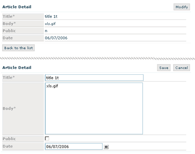

DataEdit
DataEdit extends DataForm, it is a convenient and small CRUD application.
It is similar to CI Scaffolding, it can manage a DB Table, and you can build editing form with your custom fields (like in DataForm).
It is a template based component.
Note, this component is based upon fields. Fields are a collection of classes to manage single items of a form.
Sample:
constructor:
DataEdit($title, $tablename)
params: string $title (can be empty), string $tablename
main properties:
back_url
string back_url is the link-back, it can be used to join a DataEdit (that edit a single record) with a DataGrid (that can scaffold records)
fields:
In a DataEdit you can append fields (inputs, extareas etc..) like in a DataForm
main methods:
button($name, $caption, $action, $position="BL")
submit($name, $caption, $position="BL")
script($script, $status="create")
from DataForm
buttons($button[,$button..])
possible params are:
"modify", "save", "undo", "delete", "back"
(note: rapyd support multilanguage, so you can customize labels in \system\application\rapyd\language)
build()
build output and eventually process actions.
output:
output
string, the built html form (only if you have excecuted the build_form() method before).